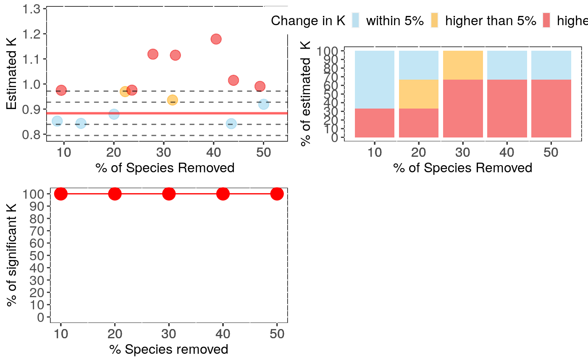
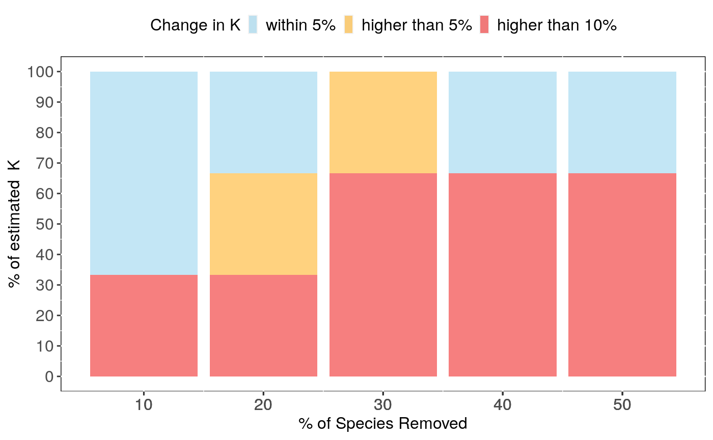

Performs analyses of sensitivity to species sampling by randomly removing species and detecting the effects on phylogenetic signal estimates
samp_physig( trait.col, data, phy, n.sim = 30, breaks = seq(0.1, 0.5, 0.1), method = "K", track = TRUE, ... )
Arguments
| trait.col | The name of a column in the provided data frame with trait to be analyzed (e.g. "Body_mass"). |
|---|---|
| data | Data frame containing species traits with row names matching tips
in |
| phy | A phylogeny (class 'phylo') matching |
| n.sim | The number of times to repeat species random removal for each
|
| breaks | A vector containing the percentages of species to remove. |
| method | Method to compute signal: can be "K" or "lambda". |
| track | Print a report tracking function progress (default = TRUE) |
| ... | Further arguments to be passed to |
Value
The function samp_phylosig returns a list with the following
components:
Trait: Column name of the trait analysed
full.model.estimates: Phylogenetic signal (K or lambda) and
p-value using the full dataset (without deleted species). See
phylosig for details.
sensi.estimates: A data frame with all simulation
estimates. Each row represents a rerun with a given number of species
n.remov removed, representing n.percent of the full dataset.
Columns report the calculated signal estimate (estimate),
difference between reduced data signal estimate and full data signal (DF),
the percentage of change in signal compared to the full data estimate (perc)
and signal p-value for the reduced data estimate(pval).
sign.analysis For each break (i.e. each percentage of species
removed) this reports the percentage of statistically significant (at p<0.05)
phylogenetic signal over all repetitions with reduced data sets.
data: Original full dataset used in the analysis.
#' @note Please be aware that dropping species may reduce power to detect
significant signal and may partially be responsible for a potential
effect of species removal on p-values. Please also consult standardised differences
in the (summary) output.
Details
This function randomly removes a given percentage of species (controlled by
breaks) from the full data, estimates phylogenetic
signal for a given trait (K or lambda) without these species using
phylosig, then
repeats the analysis many times (controlled by n.sim), stores the results and
calculates the effect of random species removal on phylogenetic signal estimates.
Output can be visualised using sensi_plot.
Note
The argument "se" from phylosig is not available in this function. Use the
argument "V" instead with intra_physig to indicate the name of the column containing the standard
deviation or the standard error of the trait variable instead.
References
Paterno, G. B., Penone, C. Werner, G. D. A. sensiPhy: An r-package for sensitivity analysis in phylogenetic comparative methods. Methods in Ecology and Evolution 2018, 9(6):1461-1467.
Werner, G.D.A., Cornwell, W.K., Sprent, J.I., Kattge, J. & Kiers, E.T. (2014). A single evolutionary innovation drives the deep evolution of symbiotic N2-fixation in angiosperms. Nature Communications, 5, 4087.
Blomberg, S. P., T. Garland Jr., A. R. Ives (2003) Testing for phylogenetic signal in comparative data: Behavioral traits are more labile. Evolution, 57, 717-745.
Pagel, M. (1999) Inferring the historical patterns of biological evolution. Nature, 401, 877-884.
Kamilar, J. M., & Cooper, N. (2013). Phylogenetic signal in primate behaviour, ecology and life history. Philosophical Transactions of the Royal Society B: Biological Sciences, 368: 20120341.
See also
Examples
if (FALSE) { data(alien) alien.data<-alien$data alien.phy<-alien$phy # Logtransform data alien.data$logMass <- log(alien.data$adultMass) # Run sensitivity analysis: samp <- samp_physig(trait.col = "logMass", data = alien.data, n.sim = 30, phy = alien.phy[[1]]) summary(samp) sensi_plot(samp) sensi_plot(samp, graphs = 1) sensi_plot(samp, graphs = 2) } # \dontshow{ data(alien) # Logtransform data alien.data$logMass <- log(alien.data$adultMass) # Run sensitivity analysis: samp <- samp_physig(trait.col = "logMass", data = alien.data, n.sim = 3, phy = alien.phy[[1]])#> Warning: NA's in response or predictor, rows with NA's were removed#> Warning: Some phylo tips do not match species in data (this can be due to NA removal) species were dropped from phylogeny or data#>#> | | | 0% | |===== | 7% | |========= | 13% | |============== | 20% | |=================== | 27% | |======================= | 33% | |============================ | 40% | |================================= | 47% | |===================================== | 53% | |========================================== | 60% | |=============================================== | 67% | |=================================================== | 73% | |======================================================== | 80% | |============================================================= | 87% | |================================================================= | 93% | |======================================================================| 100%summary(samp)#>#> Species Removed (%) Significant K (%) Mean Change (%) Mean sDFestimate #> 1 10 100 6.133333 0.05136548 #> 2 20 100 6.866667 0.44668080 #> 3 30 100 19.600000 1.32715853 #> 4 40 100 17.666667 0.98467956 #> 5 50 100 20.566667 1.39171480sensi_plot(samp)# }